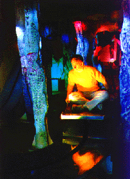

|
Holmes Fine Arts Gallery
Feb. 11th- April 28th
89 South 1st St. San Jose, California
Currents is an important show for technological art which is all-in-all under-represented in Silicon Valley. Spanning the gamut from narrative imagery to computer manipulated photo collage to electronic sculpture and installation, Currents offers a wide range of what can and should be regarded as "computer art."
It is an eclectic collection of work in that there is no obvious particular aesthetic bias or cohesive curatorial concept, but instead offers a wide range of examples of artists working with computers and electronics. Both walls along the length of the gallery are comfortably filled with two-dimensional works, sculptural pieces, and monitors regularly poking out from the walls.
Noticeable among the works are those that interact with the viewer. Bruce Cannon's interactive piece, Donation Box, spits back loose change deposited in it (as it yells "cheapskate!") and gladly gobbles up dollar bills, saying "Thank You" in a satisfied tone. Cannon's Comfort Zone is a wall piece which consists of a 2'x2'x2" block of diamond plate metal. A sensor, mounted off-center in the upper part of the plate, detects your presence as you approach. It utters responses at you based on your distance from it. Casually walking by at around ten feet might elicit "chicken!" as a reaction. The closer you get the warmer and more inviting its espousals until it becomes 'crowded' and lets you know.
The context of this show presents difficulties for the success of Comfort Zone, one of the nicer pieces. Hung on the wall in an ideal spot at about the center of the room, the sensor can catch unwitting passers-by as they wander into range. However, because it is a wide open, uncontrolled environment, the cause and effect of the viewer's actions upon the sensor get muddled. It is poorly placed (albeit necessary for logistical reasons of the gallery shape) for coherent interaction. It is almost impossible to tell what effect (if any at all) you are having upon it if there is anyone else within proximity when viewing the work. Without spending a fair amount of time with it you wouldn't know that it was capable of more than the one or two utterances you first caught.
Tim Ryan's work in the back room Father Structure, resembles a large sawhorse mounted with a slide projector that reciprocates back and forth along its track, revealing an image which changes from a baby to a man. This is perhaps Ryan's most developed piece aesthetically and conceptually. His other wall sculpture, Fill II, involves a fan and an air chamber that seems to be only about the ability of this little 'muffin' fan to fill the box with hot air -- not nearly as exciting visually or mechanically as his other work.
Ryan's large constructed relief paintings stay within the same aesthetic range as his sinewy wooden stick and horse-glue-type 3-D constructions. However, Magellanic Structure and Oceanic Devise lack the developed quality of his mechanical sculptures. His sculptural work is interesting to watch, but their natural materials and the animalistic qualities of the joints and ligaments seem to beg a discussion of natural vs. manufactured animals. He doesn't push the envelope of this exploration far enough in that direction.
The show also includes work by Joan Heemskerk, Dirk Paesmans, Joel Slayton, Jack Fulton, Gary Quinonez, Guy Marsden, Christine Tamblyn, Geri Wittig, Joe Delappe, and a few others. Blending the work of 'veterans' in the field with those of a newer generation, it showcases some historically important but under-publicized artists in this blooming field.
Despite the fact that the art works in the Currents show at Holmes Fine Art Gallery are all chosen from the field of computer and electronic art, it's hard -- or impossible -- to feel that they are functioning within a common discourse. That's not necessarily a problem, but often I got the feeling that the pieces de-charged each other rather than the opposite, which shows how carefully one has to dispose the space in a show with this many participants (27 artists).
Guy Marsden and Bruce Cannon are two well-known artists that work with intricate technology and a slick aesthetic, though Cannon's style visually involves a more gray-scale mechanical approach compared to Marsden's hi-tech electronic take. In the strongest of Cannon's pieces you interact and swallow your laugh. The piece, "Poser #2", a ball- (eye-?) shaped sensor on an adjustable "arm," becomes afraid as you approach. Another, called "Donation Box", accepts your bill and chews it to shreds. His pieces interact with you but only to reject -- even if you pay, you get nothing back.
Marsden's pieces are nicer to the viewer. His expressed positivism towards science shines through, even though he writes that his "Digital Numeric Relevator"..."satirize[s] our implicit trust in electronic [...] information." That feeling gets even more distinct in his large and visually fascinating piece "Luminosa Medosa" which doesn't reach beyond a modernistic investigation into shape and colour. While the future that Marsden shows seems bright, or at least as fascinating as Star Trek, Cannon tells us about dystopia; he's an art world Huxley or Gibson.
"Father Structure" is a sculpture by Timothy Ryan. From a distance it has a rather complex and aggressive look to it, but as you get closer and start to realize its subtler qualities it becomes an intimate and poetic piece. Inside the tangle of bars and twigs there are mechanical devices that move a couple of slides, projecting them onto a small sheet of glass. The image is a back and forth "morph" of baby to man, man to baby, which most of the time creates the uncanny image of a "ghost." The sculpture's strength is how it reflects on the gap between roughness and intimacy. His other works in the show do not really take advantage of that dichotomy. The amount of information on an index level (i.e., all the colours, glue, strings and other things) seems to move the attention away from the wholeness of the piece. The tactile and complex surface, which I believe is one of his major concerns, becomes problematic. They become overwhelming, without stringency or integrity.
Most of the space in the back room is taken up by Gary Quinonez' three-dimensional pieces. One of them is a life-size hammock made of wrist watches. It may seem like a pun or a joke but it's well accomplished, with serious undertones. Maybe it's a little too illustrative for the importance of the philosophical issue of time, one which cannot be underestimated.
Several art pieces in the show deal with this question of time. One of the strongest pieces is a small "almanac" by Steve Durie, titled "Life Calendar." It's a print with small squares, one for each day of a statistically average lifespan. If you buy it (for $20) you can pin it up and put a mark for each day that goes by: Monday, Tuesday, Wednesday... It's a frightening art work that physically makes you feel time slipping away.
Steve Durie, Joe DeLappe and Geri Wittig are some of the artists in the show using computers and technology to ask questions and investigate ideas that are not related to the medium per se. In the future I think that we will see more art like this which uses computers and technology to look out, beyond self-references to the medium or to technology itself. It's about time.

Bill Kolb's "The Art-O-Coaster"
|